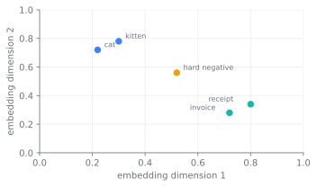

Embeddings and Representation Learning
The retrieval of Chapter 33 leaned on a model that maps a query and a chunk into one vector space, a dual-encoder, with a cross-encoder reranker and ColBERT's late interaction as the more expressive cousins. That chapter used those models. It did not say how they come to place related text near each other. The missing mechanism is representation learning. A generator's hidden states make a poor metric space; a contrastive objective repairs it by trading alignment against uniformity on a sphere; the placement of the query-document interaction sets the cost-quality trade-off; and negatives are the central training variable. Modern embedders then stretch one model across tasks and vector sizes, while the data path runs from web-mined pairs to LLM-generated pairs and finally to the decoder itself becoming the embedder.

A geometry you can compare
A language model is trained to predict the next token, and nothing in that objective asks two texts that mean the same thing to land near each other. The deeper problem is geometric. The hidden states of a trained language model are anisotropic: they do not spread over the representation space but crowd into a narrow cone, so two randomly chosen texts already point in almost the same direction. Ethayarajh measured this directly, defining anisotropy as the expected cosine similarity between uniformly random word representations, where is isotropic and a value approaching is a degenerate cone. In GPT-2's last layer that expected similarity is close to , and even BERT, a bidirectional masked model, sits around to in its upper layers (Ethayarajh 2019). When every pair is already near-parallel, cosine similarity has almost no dynamic range left to separate the related from the unrelated, which is exactly what a retriever needs it to do.
Two distinct phenomena hide under the word "cone," and it is worth keeping them apart. The first is representation degeneration: in a likelihood-trained model with tied input and output embeddings, the gradient from the softmax over rare tokens pushes their embedding vectors into a shared direction, collapsing the static embedding matrix toward low rank (Gao et al. 2019). The second is the contextual anisotropy above, a property of the per-token hidden states that grows layer by layer and is, in Ethayarajh's reading, inherent to the act of contextualization itself. Autoregression alone is not the culprit, since the bidirectional BERT is anisotropic too. The broader issue is that language-model-style training produces spaces whose distances do not track meaning. Pooling a decoder's states gives a mediocre retriever for this reason, and the fix is not a different architecture but a different objective.
Retrieval needs the opposite of generation. It needs a space where a single distance, computed once and indexed, ranks a million chunks against a query. The embedding model exists to learn that space, and it is trained for it directly rather than borrowed from a generator.
The contrastive objective
The principle is to pull a positive pair together and push negatives apart. InfoNCE, introduced for contrastive predictive coding (Oord et al. 2018), scores a query against its positive document and a set of negatives as a softmax over similarities, with a temperature . Here is the query embedding, is the document that should be retrieved, the are competing documents, and controls how sharp the competition is:
Here is the query-document similarity score and is the temperature that decides how sharply the softmax focuses on the hardest negative. The numerator is the positive pair; the denominator is the same score competing against all positives and negatives in the candidate set. The model learns by discrimination, not reconstruction: it never has to generate the document, only to rank the right one above the wrong ones. At its optimum the score recovers a density ratio, , and the original paper read this through information theory: with candidates the loss bounds the mutual information between query and positive from below, (Oord et al. 2018). That inequality has a sharp practical edge. The bound is ceilinged at , so the only way to estimate a large dependency tightly is to score against many negatives at once, which is the first reason batch size and negative count run through every recipe below.
The mutual-information story motivates the loss but does not explain why its embeddings are good, and treating a tighter MI bound as the goal can even make representations worse (Wang and Isola 2020). The explanation that holds is geometric. Wang and Isola showed that, in the limit of many negatives, the contrastive loss on -normalized vectors decomposes into two measurable properties on the unit hypersphere (Wang and Isola 2020). Alignment asks that a positive pair land close,
Here and are a positive pair and maps each item into the embedding space, so the loss is small only when paired items land nearby. Uniformity asks the complementary question, that the embeddings of unrelated text spread evenly over the sphere rather than collapse into a cone,
Here is the embedding function, draws true query-document or sentence-pair positives, and draws unrelated samples from the whole corpus. Alignment measures whether positives land close; uniformity measures whether the rest of the space is used instead of collapsing into one cone. These two scalars, each directly measurable on a trained model, predict downstream quality, and optimizing them on their own matches InfoNCE. The frame also names exactly what was wrong in the previous section: a pre-trained language model has decent alignment but poor uniformity, the anisotropic cone made quantitative. SimCSE makes the connection mechanical. Its analysis shows that the uniformity term upper-bounds the sum of the entries of the embedding Gram matrix, and through that sum it bounds the largest eigenvalue, so minimizing it flattens the singular-value spectrum of the embedding space and pulls the cone open (Gao et al. 2021). Post-hoc fixes target the same isotropy from the outside, whitening the representations (Su et al. 2021) or mapping them to a Gaussian with a normalizing flow (Li et al. 2020), but these improve uniformity at the cost of alignment, which is why a contrastive objective that improves uniformity while preserving alignment wins over both.
Temperature is the last lever in this objective and a more consequential one than it looks. The gradient on a negative grows like , so the penalty is hardness-aware: nearer negatives are pushed harder, and a small concentrates almost all of the gradient on the single hardest negative, recovering a margin loss in the limit, while a large spreads the gradient evenly and ignores hardness (Wang and Liu 2021). The same knob trades against itself. A small buys uniformity but pushes apart even semantically similar neighbors, eroding the local structure that makes embeddings useful for similarity, so there is a uniformity-tolerance dilemma and a usable model lives in a middle band of , commonly near to for text retrieval.
There are two ways to read the contrastive loss. The information-theoretic reading (maximize a lower bound on ) is the historical motivation and explains why more negatives help, through the ceiling. The geometric reading (jointly optimize alignment and uniformity) is what actually predicts embedding quality and connects the objective back to the anisotropy problem. The main line only needs the geometric reading; the MI bound is the lineage, not the load-bearing explanation.
Where the query and document meet
Three architectures answer the same question differently: at what point are the query and document allowed to interact? The answer fixes the cost-quality trade-off, because interaction that happens early cannot be precomputed.
A cross-encoder concatenates the query and document into one sequence and runs full token-to-token attention across both. It is the most accurate scorer, but its representation of the document depends on the query, so nothing can be indexed: scoring a corpus of documents costs transformer passes per query. Sentence-BERT put a number on the wall this builds, finding the most similar pair among ten thousand sentences with a BERT cross-encoder takes on the order of fifty million inferences and tens of hours (Reimers and Gurevych 2019). The cross-encoder is therefore confined to reranking a short candidate list, the role it plays in Chapter 33.
A dual-encoder, or bi-encoder, breaks that wall by encoding the query and the
document independently into one vector each, comparing them by cosine or dot
product. Because the document vector does not depend on the query, the entire
corpus is encoded once, offline, and indexed; the only online cost is encoding
the query and a vector search. Sentence-BERT built this as a siamese network with
shared weights and a mean-pooling layer over BERT's token outputs, chosen over
the [CLS] vector or max-pooling in its ablation, and the ten-thousand-sentence
search that took hours as a cross-encoder collapses to seconds
(Reimers and Gurevych 2019). The factorizability is bought by giving up cross-attention
between the two sides, and that lost interaction is what the rest of the field
spends its effort trying to recover cheaply.
ColBERT occupies the middle. It encodes each side independently into a bag of per-token vectors and scores by late interaction: for each query token, take the maximum similarity over all document tokens, then sum, an operation called MaxSim (Khattab and Zaharia 2020). The document token vectors still depend only on the document, so they remain precomputable and indexable, and only the cheap MaxSim aggregation runs online, giving roughly cross-encoder quality at orders of magnitude less compute per query. The price is storage, one vector per token rather than per document, which ColBERTv2 attacks with residual compression against cluster centroids and denoised distillation from a cross-encoder, cutting the index six to ten times smaller while improving quality (Santhanam et al. 2022).
flowchart TD
subgraph CE["Cross-encoder (rerank only)"]
q1["query"] --> cat["concat + full attention"]
d1["doc"] --> cat
cat --> s1["score"]
end
subgraph BE["Dual-encoder (corpus search)"]
q2["query"] --> eq["encoder"] --> vq["1 vector"]
d2["doc (offline)"] --> ed["encoder"] --> vd["1 vector (indexed)"]
vq --> dot["dot product"]
vd --> dot --> s2["score"]
end
subgraph LI["Late interaction (ColBERT)"]
q3["query"] --> tq["per-token vectors"]
d3["doc (offline)"] --> td["per-token vectors (indexed)"]
tq --> mx["MaxSim sum"]
td --> mx --> s3["score"]
endThe serving layer chooses the architecture. The cost a retriever may spend per query at scale is what forbids the cross-encoder from first-stage search and forces the dual-encoder's independent encoding, and it is the same pressure that makes ColBERT's per-token index a real cost to be compressed away. The bi-encoder-versus-cross-encoder split Chapter 33 draws at retrieval time is, at training time, a decision about where the corpus's serving budget will let two pieces of text touch.
Negatives are the design variable
The positive is given; the skill is in what you push away. In a dual-encoder the model only ever learns from the negatives it is shown, so their distribution, not the loss formula, is the dominant lever, and the recipes are a history of finding harder ones.
The first move is to make negatives nearly free. In-batch negatives, introduced at scale by Dense Passage Retrieval, treat the other positives in a training batch as negatives for each query: a batch of pairs yields a similarity matrix in which each query's gold passage is its positive and the other passages are negatives, reused at no extra encoding cost (Karpukhin et al. 2020). A larger batch therefore buys more negatives almost for free and directly raises retrieval quality, which is why embedding training runs push batch sizes into the tens of thousands. DPR added one BM25-mined hard negative per question on top, and reported nine to nineteen points of absolute top-20 accuracy over BM25 alone.
In-batch negatives are mostly easy, though, and an easy negative teaches little. Once a model is decent, a random negative already sits far from the query, so its softmax probability is near zero and its gradient nearly vanishes. ANCE made this argument precise and drew the consequence: mine negatives that are actually hard by retrieving the current top-ranked but irrelevant documents from an approximate nearest-neighbor index over the whole corpus, refreshed asynchronously from a recent checkpoint so the negatives track the model as it improves (Xiong et al. 2021). With genuinely hard negatives, a dot-product retriever nearly matched a far more expensive cross-encoder cascade. RocketQA pushed both axes further, gathering negatives across the data-parallel batch so each query sees many more of them than one device holds, and adding a denoising step (Qu et al. 2021).
That denoising step treats the deepest hazard in the whole scheme, the false negative. Retrieval corpora are sparsely labeled: a query may have many relevant passages but only one is annotated, so any scheme that calls everything unlabeled a negative will mislabel true positives as negatives, and it does so worst among the hard high-similarity candidates, punishing the model for being right. RocketQA scores candidate hard negatives with a cross-encoder and discards the most confidently-relevant ones, keeping only the confidently-irrelevant (Qu et al. 2021). Average the loss over many queries as the negatives are drawn closer to the query, and watch it climb, which is the signal that harder negatives carry more gradient.
import numpy as np
rng = np.random.default_rng(0)
d = 32
def infonce(q, dpos, dnegs, tau=0.05):
sims = np.array([q @ dpos] + [q @ x for x in dnegs]) / tau
sims -= sims.max() # numerical stability
p = np.exp(sims) / np.exp(sims).sum()
return -np.log(p[0]) # loss = -log P(positive)
def unit(v): return v / np.linalg.norm(v)
def mean_loss(hardness, n, trials=300): # hardness 0=random, ->1 toward query
total = 0.0
for _ in range(trials):
q = unit(rng.normal(size=d))
dpos = unit(q + 0.4 * rng.normal(size=d))
negs = [unit(hardness * q + (1 - hardness) * rng.normal(size=d)) for _ in range(n)]
total += infonce(q, dpos, negs)
return total / trials
for h in [0.0, 0.3, 0.6]:
print(f"negative hardness {h:.1f}: mean loss = {mean_loss(h, 16):.3f}")
print("harder negatives (closer to the query) -> larger loss -> stronger signal")
The other side of the pair, the positive, is the bottleneck when labels are scarce, and two routes manufacture one. SimCSE makes its positive by encoding the same sentence twice under different dropout masks, an almost-free perturbation that works surprisingly well, and its supervised form draws positives from natural-language-inference entailment pairs while using contradiction pairs as labeled hard negatives (Gao et al. 2021). Contriever builds positives without any labels at all, cropping two spans from one document or pairing a sentence with its surrounding context, with negatives held in a momentum queue so their count is decoupled from the batch; unsupervised, it already beats BM25 on most of the BEIR suite (Izacard et al. 2022). A third route transfers accuracy rather than inventing data: distill the cross-encoder's judgments into a bi-encoder. Because architectures score on different scales, the method is to match the margin between a positive and a negative rather than the raw score, the Margin-MSE objective (Hofstätter et al. 2020), which TAS-B combines with topic-aware batch sampling, drawing each batch from one query cluster so the in-batch negatives are topically hard, to train a strong dense retriever on a single GPU (Hofstätter et al. 2021).
One model, many tasks and many sizes
A single embedder is asked to serve search, clustering, classification, and deduplication at once, and two ideas stretch one model across that range. The first conditions the embedding on a task instruction. Instructor prepends a short natural-language description of the task, encoding the concatenation and pooling only over the text tokens, so the same weights and the same input sentence land at different points depending on whether the declared task is retrieval or similarity, with no per-task fine-tuning; trained on a 330-dataset mixture with written instructions, it improves over the prior best across seventy tasks, most of them unseen (Su and others 2022). TART carries the same idea into retrieval proper, letting a user state intent alongside the query and advancing zero-shot retrieval while outperforming models several times larger (Asai et al. 2023). The move is the same in both: collapse many task-specific embedders into one model parameterized by a prompt.
The second idea makes the vector size itself a dial. Matryoshka representation learning trains so that the first dimensions of the embedding are themselves a usable embedding, by attaching a loss to every nested prefix at once and summing them,
Here is the set of prefix dimensions the model promises to support, is the first coordinates of the embedding, and is the task head attached to that prefix during training. The formula makes truncation a training obligation rather than a post-hoc hope, so each leading slice is explicitly forced to be discriminative on its own (Kusupati and others 2022). The leading coordinates come out as accurate as a model trained natively at that size, at no extra training cost, which turns truncation into a first-class operation: store the full vector once, and per query use a short prefix to build a cheap shortlist before reranking with the full vector. This is why API embedders now advertise truncatable dimensions, and it is a clean case of a serving cost reaching back to reshape what the training run is asked to produce.
Where the training pairs come from
The bottleneck is rarely the loss; it is the supply of query-document pairs, and the field's recent history is two answers to that supply problem. The first mines pairs from the web at scale. E5 assembles a "colossal clean" corpus of naturally occurring pairs, posts and comments from Reddit, question-and-answer pairs from Stack Exchange, titles and passages from Wikipedia and Common Crawl, filtering roughly a billion noisy pairs down to a few hundred million with a consistency-based filter, contrastively pretrains on them, then runs a small supervised fine-tune; it was the first unsupervised model to beat BM25 on BEIR and reaches the top of the benchmarks while undercutting models with far more parameters (Wang et al. 2022). GTE (Li et al. 2023) and the BGE / C-Pack family (Xiao et al. 2024) follow the same multi-stage shape, mining hundreds of millions of pairs before a supervised stage, with C-Pack contributing the Chinese-language resources and a three-stage recipe that starts from masked-autoencoder pretraining.
The route that now leads bootstraps from a generator, and it arrived in stages. Scaling the backbone came first: Sentence-T5 and GTR took the encoder of a T5 model up to billions of parameters and showed that a large dual-encoder generalizes strikingly well out of domain on a fraction of the labeled data (Ni et al. 2022; Ni et al. 2022). Then the generator took over the data. E5-mistral prompts a proprietary large language model to synthesize diverse retrieval tasks and their query-document pairs across dozens of languages, then fine-tunes Mistral-7B itself into the embedder with a brief low-rank adaptation, reaching the top of the benchmarks with little human-labeled data (Wang et al. 2023). The generative model trains the retrieval model, a clean instance of the synthetic-data loop of Chapter 18.
Once the embedder is a decoder model, a specific architectural argument follows: the causal mask that a generator needs is a handicap for an encoder that should see the whole text at once. LLM2Vec turns any decoder into an encoder in three unsupervised steps, enabling bidirectional attention, adapting with masked next-token prediction, then a SimCSE-style contrastive pass (BehnamGhader et al. 2024). NV-Embed makes the same bidirectional move and adds a learned latent-attention pooling layer that beats both mean and last-token pooling, reaching the top of MTEB on public data alone (Lee et al. 2025). The frontier embedders extend the line: Gemini Embedding initializes from Gemini, runs bidirectionally, and tops the multilingual benchmark (Lee et al. 2025), and the Qwen3 embedding models ship the recipe openly at several sizes (Zhang et al. 2025). The through-line is a steady migration, from finding the pairs, to generating the pairs, to making the language model itself the embedder, with pooling drifting from mean to last-token to learned attention and the decoder's causal mask deliberately removed along the way.
The shape of the field
Two threads run through this lineage, a theory thread that explains what a good embedding space is and an engineering thread that learns one ever more cheaply, and they meet in the modern LLM-bootstrapped embedder.
The trade-offs that frame the field are consistent across the threads. A cross-encoder is the most accurate scorer and the least scalable; a dual-encoder is the most scalable and gives up the most interaction; late interaction buys back quality with index storage. Harder negatives carry more signal but risk false negatives that need a denoiser. A larger backbone generalizes better but costs more to serve, and the same Matryoshka vector that is cheap to index at 256 dimensions is less accurate than the full 1024. Every gain here is paid for somewhere, usually at serving time, which is the lens the next box brings.
Whether one general embedder can dominate is unsettled. MTEB, which scores embedders across classification, clustering, retrieval, reranking, and semantic similarity, found that no single model wins every task, and its multilingual successor MMTEB sharpened the point: at the frontier the best publicly available model was a 560-million-parameter multilingual encoder, beating decoder LLMs an order of magnitude larger (Muennighoff et al. 2023; Enevoldsen and others 2025). One camp reads this as temporary, a stronger LLM-bootstrapped embedder will generalize across all tasks; the other reads it as structural, because the geometry that separates topics for clustering is not the geometry that ranks an answer for retrieval, symmetric similarity and asymmetric relevance pulling the space in different directions, which is exactly why instruction-conditioning exists. Two further doubts attach. BEIR showed that dense retrievers generalize worse than BM25 out of domain, so a benchmark won in-distribution may not transfer (Thakur et al. 2021), and once a leaderboard becomes the target, models drift toward fitting it. And instruction-following retrieval remains largely unsolved: FollowIR finds that current retrievers use instructions as bags of keywords rather than as constraints, though fine-tuning can teach the skill (Weller et al. 2024). Treat an embedding leaderboard score as task-shaped until tested on your own retrieval distribution.
The vector index reaches back into how the representation is trained. The serving cost of retrieval scales with the embedding dimension times the corpus size (Chapter 33), and that cost, paid on every query forever, is what justifies training for truncatability in the first place: Matryoshka exists because a 1024-dimensional vector over a billion chunks is expensive enough that being able to drop to 256 dimensions without retraining is worth designing for. The same arrow set the architecture two sections up and the negative-mining budget one section up. The retrieval layer's cost dictates the shape, the size, and even the training signal of the vector the run is asked to produce.
Further reading
- Oord et al., “Representation Learning with Contrastive Predictive Coding” (introduces the InfoNCE contrastive loss), 2018. arXiv:1807.03748
- Reimers & Gurevych, “Sentence-BERT: Sentence Embeddings using Siamese BERT-Networks” (siamese dual-encoder sentence embeddings comparable by cosine), 2019. arXiv:1908.10084
- Karpukhin et al., “Dense Passage Retrieval for Open-Domain Question Answering” (DPR; dual-encoder with in-batch negatives), 2020. arXiv:2004.04906
- Gao et al., “SimCSE: Simple Contrastive Learning of Sentence Embeddings” (dropout as minimal augmentation; NLI pairs for supervision), 2021. arXiv:2104.08821
- Khattab & Zaharia, “ColBERT: Efficient and Effective Passage Search via Contextualized Late Interaction over BERT” (late interaction; MaxSim over token embeddings), 2020. arXiv:2004.12832
- Kusupati & others, “Matryoshka Representation Learning” (prefixes of one embedding usable at multiple dimensions, no extra training), 2022. arXiv:2205.13147
- Wang et al., “Text Embeddings by Weakly-Supervised Contrastive Pre-training” (E5; contrastive pretraining on mined text pairs (CCPairs)), 2022. arXiv:2212.03533
- Wang et al., “Improving Text Embeddings with Large Language Models” (E5-mistral; LLM-generated synthetic training data, fine-tunes Mistral-7B), 2023. arXiv:2401.00368
- Muennighoff et al., “MTEB: Massive Text Embedding Benchmark” (broad multi-task embedding benchmark; no single model dominates), 2023. arXiv:2210.07316
- Su & others, “One Embedder, Any Task: Instruction-Finetuned Text Embeddings” (Instructor; one model conditioned on a task instruction), 2022. arXiv:2212.09741
- Qu et al., “RocketQA: An Optimized Training Approach to Dense Passage Retrieval for Open-Domain Question Answering” (cross-batch negatives and denoised hard negatives), 2021. arXiv:2010.08191
- Ethayarajh, “How Contextual are Contextualized Word Representations? Comparing the Geometry of BERT, ELMo, and GPT-2 Embeddings” (measures anisotropy of contextual representations; GPT-2 last layer near 0.99), 2019. arXiv:1909.00512
- Gao et al., “Representation Degeneration Problem in Training Natural Language Generation Models” (softmax over rare tokens collapses tied embeddings into a narrow cone), 2019. arXiv:1907.12009
- Wang & Isola, “Understanding Contrastive Representation Learning through Alignment and Uniformity on the Hypersphere” (contrastive loss decomposes into alignment and uniformity on the sphere), 2020. arXiv:2005.10242
- Wang & Liu, “Understanding the Behaviour of Contrastive Loss” (temperature as hardness weighting; the uniformity-tolerance dilemma), 2021. arXiv:2012.09740
- Su et al., “Whitening Sentence Representations for Better Semantics and Faster Retrieval” (post-hoc whitening transform forces isotropy and enables dimension reduction), 2021. arXiv:2103.15316
- Li et al., “On the Sentence Embeddings from Pre-trained Language Models” (BERT-flow; maps anisotropic embeddings to an isotropic Gaussian via a flow), 2020. arXiv:2011.05864
- Xiong et al., “Approximate Nearest Neighbor Negative Contrastive Learning for Dense Text Retrieval” (ANCE; hard negatives mined from an asynchronously refreshed ANN index), 2021. arXiv:2007.00808
- Izacard et al., “Unsupervised Dense Information Retrieval with Contrastive Learning” (Contriever; unsupervised positives from cropping and inverse cloze, momentum negatives), 2022. arXiv:2112.09118
- Santhanam et al., “ColBERTv2: Effective and Efficient Retrieval via Lightweight Late Interaction” (residual compression and denoised distillation cut the late-interaction index 6-10x), 2022. arXiv:2112.01488
- Hofstätter et al., “Improving Efficient Neural Ranking Models with Cross-Architecture Knowledge Distillation” (Margin-MSE; distill the cross-encoder score margin into a bi-encoder), 2020. arXiv:2010.02666
- Hofstätter et al., “Efficiently Teaching an Effective Dense Retriever with Balanced Topic Aware Sampling” (TAS-B; topic-aware batch sampling under dual-teacher Margin-MSE distillation), 2021. arXiv:2104.06967
- Asai et al., “Task-aware Retrieval with Instructions” (TART; instruction-following retrieval, intent stated alongside the query), 2023. arXiv:2211.09260
- Li et al., “Towards General Text Embeddings with Multi-stage Contrastive Learning” (GTE; multi-stage contrastive learning on mined then labeled pairs), 2023. arXiv:2308.03281
- Xiao et al., “C-Pack: Packed Resources For General Chinese Embeddings” (BGE / C-Pack; three-stage recipe from RetroMAE pretraining to multi-task tuning), 2024. arXiv:2309.07597
- Ni et al., “Sentence-T5: Scalable Sentence Encoders from Pre-trained Text-to-Text Models” (scales the T5 encoder to billions of parameters for sentence embeddings), 2022. arXiv:2108.08877
- Ni et al., “Large Dual Encoders Are Generalizable Retrievers” (GTR; a large T5-encoder dual encoder generalizes out of domain on little data), 2022. arXiv:2112.07899
- BehnamGhader et al., “LLM2Vec: Large Language Models Are Secretly Powerful Text Encoders” (turns a decoder into an encoder: bidirectional attention, MNTP, contrastive), 2024. arXiv:2404.05961
- Lee et al., “NV-Embed: Improved Techniques for Training LLMs as Generalist Embedding Models” (latent-attention pooling and removed causal mask; tops MTEB on public data), 2025. arXiv:2405.17428
- Lee et al., “Gemini Embedding: Generalizable Embeddings from Gemini” (initialized from Gemini, bidirectional, model-soup averaging; tops MMTEB), 2025. arXiv:2503.07891
- Zhang et al., “Qwen3 Embedding: Advancing Text Embedding and Reranking Through Foundation Models” (Qwen3 embedding and reranking models at 0.6B/4B/8B, open weights), 2025. arXiv:2506.05176
- Thakur et al., “BEIR: A Heterogenous Benchmark for Zero-shot Evaluation of Information Retrieval Models” (zero-shot retrieval benchmark; dense retrievers generalize worse than BM25 out of domain), 2021. arXiv:2104.08663
- Enevoldsen & others, “MMTEB: Massive Multilingual Text Embedding Benchmark” (500+ tasks, 250+ languages; best public model a 560M encoder over larger LLMs), 2025. arXiv:2502.13595
- Weller et al., “FollowIR: Evaluating and Teaching Information Retrieval Models to Follow Instructions” (retrievers use instructions as keywords, not constraints; fine-tuning can teach it), 2024. arXiv:2403.15246